Tutorial for open windows/pt-br
| Topic |
|---|
| {{{Topic}}} |
| Level |
| {{{Level}}} |
| Time to complete |
| Not provided |
| Authors |
| Not provided |
| FreeCAD version |
| {{{FCVersion}}} |
| Example files |
| None |
| See also |
| None |
Introdução
Este tutorial mostra como inserir Janelas em Arco e portas em um modelo de edificação, como exibi-las abertas na vista 3D e como criar um desenho 2D (projeção de planta e elevação) para o modelo. Ele utiliza as bancadas de trabalho Draft, Arch e TechDraw.
As ferramentas comuns utilizadas são: Draft Grid, Draft Snap, Draft Wire, Arch Wall, Arch Window, Arch SectionPlane e TechDraw ArchView.
Consulte também a página a seguir para ver alguns vídeos sobre como trabalhar com janelas e portas.
Configuração
1. Abra o FreeCAD, crie um novo documento vazio e mude para a Bancada de Trabalho Arch.
2. Certifique-se de que as unidades estejam configuradas corretamente no menu Editar → Preferências → Geral → Unidades. Por exemplo, MKS (m/kg/s/grau) é adequado para lidar com distâncias em uma edificação típica; além disso, defina o número de casas decimais como 4 para considerar até mesmo as menores frações de metro.
3. Use o botão Draft ToggleGrid para exibir uma grade com resolução adequada. Você pode alterar a aparência da grade no menu Editar → Preferências → Draft → Grade e atração → Grade. Defina linhas a cada 50 mm, com linhas principais a cada 20 linhas (a cada metro) e um total de 1000 linhas (a grade cobre uma área de 50 m x 50 m).
4. Zoom out da visualização 3D se você estiver muito próximo da grade.
Agora estamos prontos para criar uma construção simples com paredes fechadas, duas portas e duas janelas.
Colocando uma parede
5. Use a ferramenta Draft Wire para criar uma polilinha fechada. Siga no sentido anti-horário.
- 5.1. Primeiro ponto em (0, 0, 0); na caixa de diálogo, digite 0 m Enter, 0 m Enter, 0 m Enter.
- 5.2. Segundo ponto em (3, 0, 0). Pressione X para restringir o movimento ao eixo X; digite o valor 3 m Enter.
- 5.3. Terceiro ponto em (3, 4, 0). Pressione Y para restringir o movimento ao eixo Y; digite o valor 4 m Enter.
- 5.4. Quarto ponto em (0, 4, 0). Pressione X para restringir o movimento ao eixo X; digite o valor - 3 m Enter.
- 5.5. Pressione O para fechar a polilinha e encerrar a ferramenta.
- 5.6. No teclado numérico, pressione 0 para obter uma vista axonométrica do modelo.
- Nota: os pontos também podem ser definidos com o ponteiro do mouse, selecionando interseções na grade, com o auxílio da barra de ferramentas Draft Snap e do método Draft Grid.
6. Selecione o DWire e altere a propriedade DadosMake Face para false.
7. Selecione o DWire e clique na ferramenta Arch Wall; a parede é criada imediatamente com uma largura (espessura) padrão de 0,2 m e altura de 3 m.
- Note: se a propriedade DadosMake Face de
DWirefortrue, esta etapa criará um bloco sólido, em vez de usar apenas o contorno deDWire.
{kind=link}
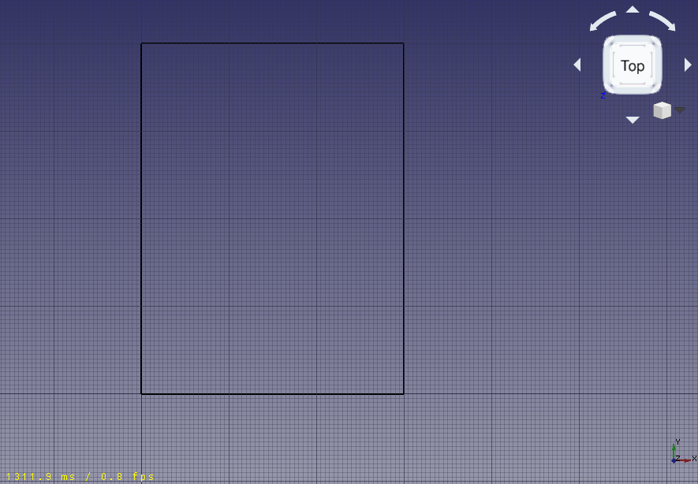
Fio de base para a parede; é um fio fechado que não forma uma face
{kind=link}
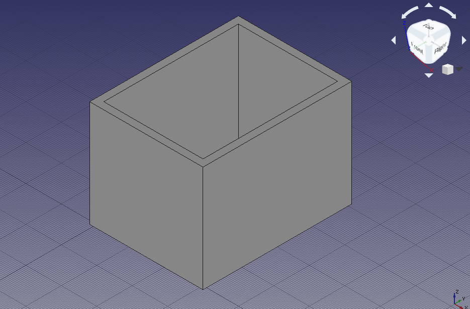
Posicionando portas e janelas
8. Clique na ferramenta Janela em Arco; como predefinição, selecione Simple door (porta simples) e altere a altura para 2 m.
- 8.1. Altere a captura (snap) para Draft Midpoint (ponto médio) e tente selecionar a aresta inferior da parede frontal; gire a vista padrão conforme necessário para ajudar a selecionar a aresta e não a face da parede; quando o ponto médio estiver ativo, clique para posicionar a porta.
- 8.2. Clique novamente na ferramenta Janela em Arco e posicione outra porta, mas desta vez no ponto médio da parede traseira; gire a vista padrão conforme necessário.
{kind=link}
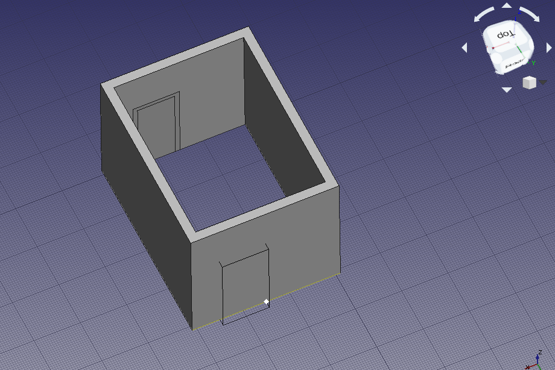
Captura no ponto médio da aresta inferior da parede para posicionar a porta
9. Clique na ferramenta Janela Arch; como predefinição, selecione Open 1-pane e altere a Sill height (altura da soleira) para 1 m.
- 9.1. Mantenha a captura (snapping) definida para Ponto Médio do Draft e tente selecionar a aresta inferior da parede do lado esquerdo; rotacione a vista padrão conforme necessário para ajudar a selecionar a aresta em vez da face da parede; quando o ponto médio estiver ativo, clique para posicionar a janela.
- Nota: a
Altura da soleiraé a distância do piso até a borda inferior do elemento. Para portas, aAltura da soleiraé geralmente 0 m, pois as portas normalmente tocam o piso; por outro lado, as janelas costumam ter um afastamento de 0,5 m a 1,5 m em relação ao piso.
- 9.2. Clique novamente na ferramenta Janela Arch e posicione outra janela, mas desta vez no ponto médio da parede direita; rotacione a vista padrão conforme necessário. Desta vez, defina a largura (comprimento) da janela como 1,5 m e, novamente, defina a
Altura do peitorilcomo 1 m.
{kind=link}
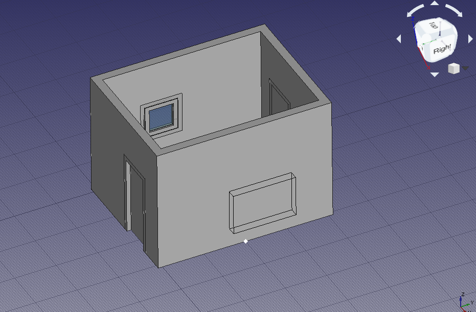
Capturando o ponto médio da aresta inferior da parede para posicionar a janela
- Nota: o parâmetro
Sill height(altura da soleira) só pode ser definido ao criar a janela inicialmente com uma predefinição. Uma vez inserida a janela, modifique seu posicionamento editando o vetor[x, y, z]da propriedade DadosPosition do Esboço do Sketcher subjacente.
- 9.3. Mova a
Window001um pouco mais para cima. Selecione oSketch003subjacente e altere sua DadosPosition de[3.1 m, 2.0 m, 1.0 m]para[3.1 m, 2.0 m, 1.6 m]. Toda aWindow001deve se mover para cima. A parede ainda pode exibir uma abertura na posição anterior; se isso acontecer, clique com o botão direito no elementoWall, selecioneMark to recomputee, em seguida, pressione Ctrl+R para recalcular o modelo.
{kind=link}
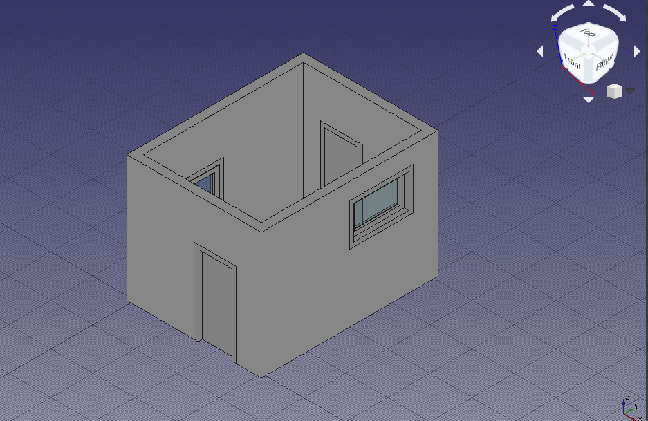
Nota: ao posicionar uma janela ou porta com uma predefinição, posicione o cursor sobre a Parede Arch e aguarde até que o elemento gire para ficar paralelo a essa parede. Aponte para a aresta inferior da parede e use a Sill height (altura da soleira) para ajustar a distância em relação ao piso. Se isso for difícil, utilize o modo de captura Draft Near da barra de ferramentas Draft Snap para inserir o elemento em qualquer ponto da face da parede e, em seguida, ajuste sua DadosPosition (posição) manualmente, conforme descrito acima. Manter vários modos de captura Draft Snap ativos simultaneamente pode causar problemas ao posicionar o elemento; portanto, tente utilizar apenas uma opção de cada vez.
Nota 2: ocasionalmente, a janela pode ser posicionada fora da Parede Arch; desde que o elemento esteja paralelo a essa parede, você deverá conseguir corrigir a posição manualmente.
Opening the doors
10. In the tree view select Sketch underlying Door, and press Space, or change the property VistaVisibility to true
11. Double click Door in the tree view to start editing it.
- 11.1. Inside the
Window elementsframe there are two panes,WiresandComponents. - Note: with a simple door preset there are two wires,
Wire0andWire1, and two components,OuterFrameandDoor. A custom designed Arch Door may have more wires and components.
- 11.2. Click on
Door, and click the Edit button. This shows the properties of theDoorcomponent likeName,Type,Wires,Thickness,Offset,Hinge, andOpening mode. - 11.3. In the 3D view, select only one vertical edge in the visible sketch of the door, then click the Get selected edge button. The button should change to an edge name, for example, Edge8.
- 11.4. Change the
Opening modeto Arc 90, or any other option. - 11.5. Click the +Create/update component button, and then Close to finish editing the door. The sketch may become hidden again.
{kind=link}
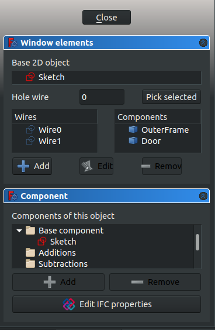
Dialog to edit a window or a door
{kind=link}
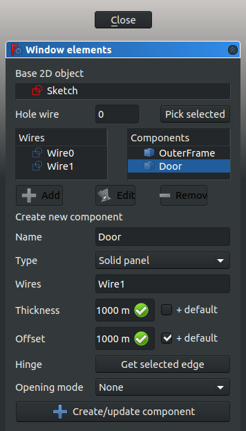
Dialog to edit the components that make a window or a door
{kind=link}
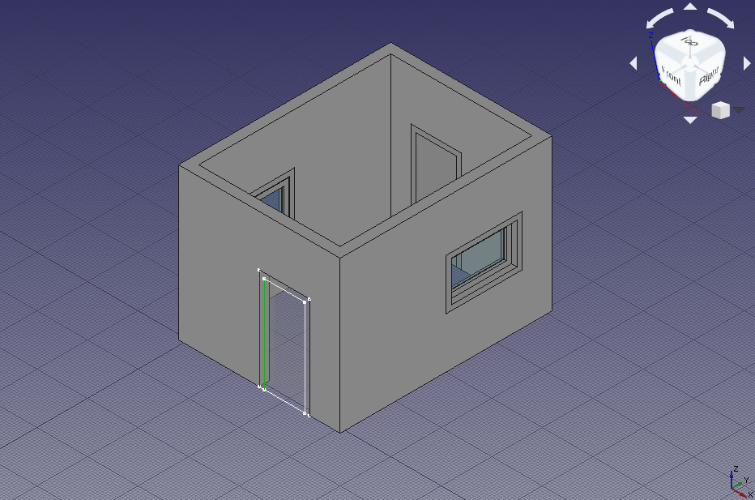
Vertical edge of sketch selected as hinge for a door
12. Select Door, and give the property DadosOpening a value of 45. The solid panel of the door should open to the inside of the building.
13. Select Door, and change the property DadosSymbol Elevation to true; the tip of the created wire indicates which side of the door opens; this is easier to see if the viewport changes to front view. Change the property DadosSymbol Plan to true; a circular arc should indicate the extent of the door's swing; this is easier to see if the viewport changes to top view.
14. Repeat the steps with Door001 and the underlying Sketch001 to make the door open 75 degrees to the inside of the building. Also enable the elevation and plan symbols.
{kind=link}
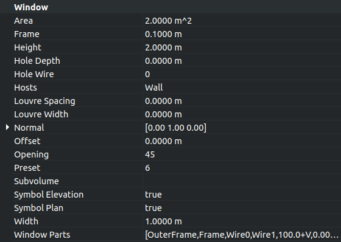
Property view of the door to change Opening value, Symbol elevation, Symbol plan, and other options
{kind=link}
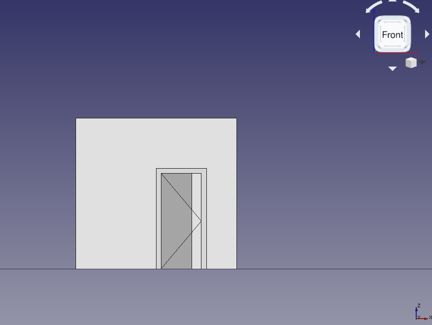
Door with opening elevation symbol, front view
{kind=link}
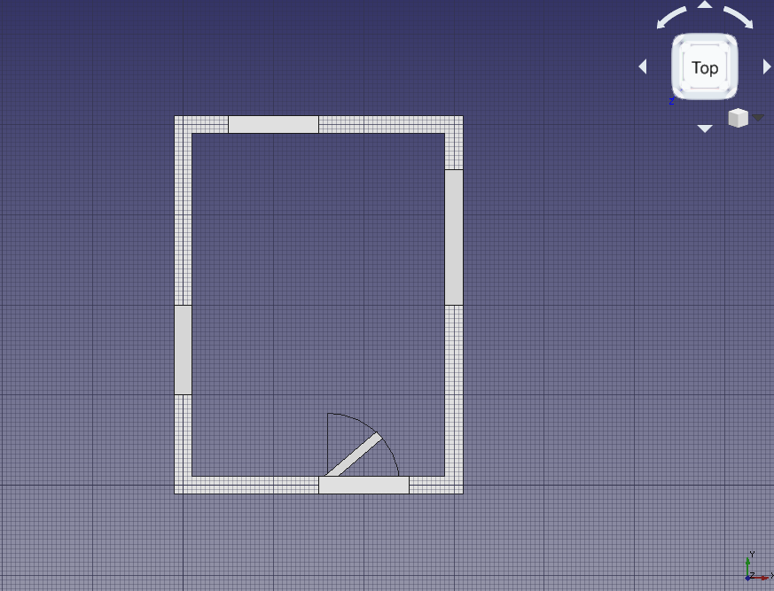
Door with plan symbol, top view
Opening the windows
15. In the tree view select Sketch002 underlying Window, and press Space, or change the property VistaVisibility to true.
16. Double click Window in the tree view to start editing it.
- 16.1. Click on the
InnerFramecomponent, and click the Edit button.
- 16.2. In the 3D view, select only one vertical edge of
Sketch002. The wires representingOuterFrameand theInnerFrameare very close to each other, so zoom in as close as possible to the sketch to select the appropriate wire. Then click the Get selected edge button. The button should change to an edge name, for example, Edge12. - Note: when there are many solids on the screen that it becomes difficult to select only one edge, switch to wireframe mode to remove the faces of those solid objects, and see only the wires, edges, and contours.
- 16.3. Change the
Opening modetoArc 90 inv, or any other option.
17. Select Window, and give the property DadosOpening a value of 45. The inner frame containing the transparent glass should open to the inside of the building.
18. Select Window, and change the property DadosSymbol Elevation to true; the tip of the created wire indicates which side of the window opens; this is easier to see if the viewport changes to left side view. Change the property DadosSymbol Plan to true; a circular arc should indicate the extent of the window's swing; this is easier to see if the viewport changes to top view.
19. Repeat the steps with Window001 and the underlying Sketch003 to make the window open 75 degrees. Also show the elevation and plan symbols. In this case, don't pick a vertical wire of the InnerFrame as hinge, but pick the top horizontal wire. This means that this window will open differently from the other window. The elevation symbol will be better seen from a right side view. The plan symbol will be better seen from the front view; however, since the wall is obstructing the view, you can change its VistaTransparency to a value such as 85 to see through it; alternatively you can also change its VistaDisplay Mode to Wireframe to show only its edges.
{kind=link}
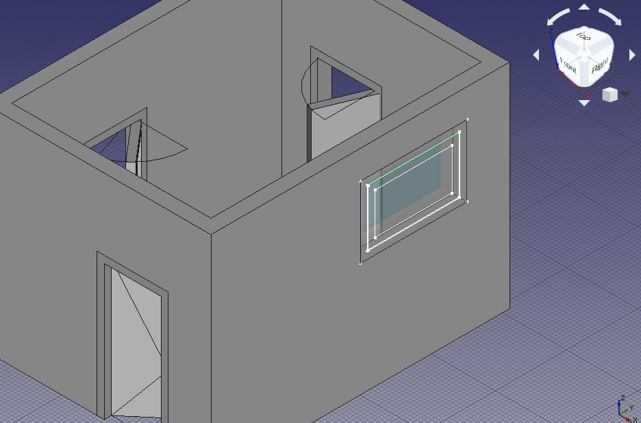
Horizontal edge of sketch selected as hinge for a window
{kind=link}
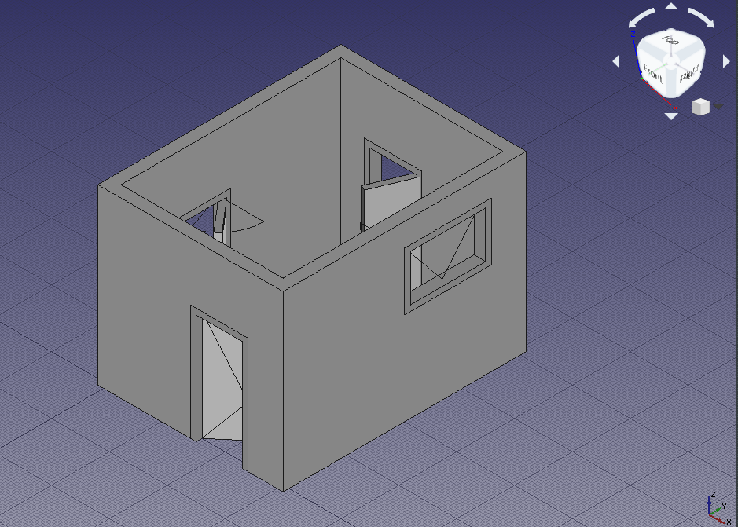
Elevation and plan symbols for all elements, axonometric view

Elevation and plan symbols for all elements, top view
Making a floor plan of the building
20. Still in the Arch Workbench, select all components in the tree view, the Arch Wall, the two Arch Windows, and the two Arch Doors, then use the Arch SectionPlane tool to create a Section element.
Note: change the property DadosArrow size of the section plane to a larger value, for example, 200 mm, so that the direction of the section is clearly visible in the 3D viewport.
{kind=link}
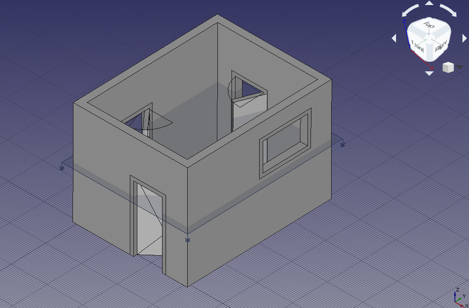
Section plane cutting through solid objects, including walls, doors, and windows
21. Change to the TechDraw Workbench and insert a new page with the TechDraw PageDefault tool; a new Page object is created, and the view switches to this page. The page inserted is a standard A4 sheet in landscape orientation, with a basic frame around it. Use the TechDraw PageTemplate tool if you need to create a new page using a particular SVG template.
22. Select Section, and use the TechDraw ArchView tool to create an ArchView object in the page. Most probably the new object won't be visible in the page because it has a very large scale of 1, that is, 1:1. This means that every meter in the 3D view is shown as a meter in the page view; since the page is only 0.297 m x 0.210 m in size, most features are too big to fit in this page at their natural scale.
23. Select this ArchView object, and change the property DadosScale to 0.02, which is equivalent to 1:50, a scale suitable for typical buildings. This means every meter in the 3D view will be shown as 20 mm in the page. The object should appear in the center of the page, and can be moved to a better position on the left side. The two doors should look like they are open, but only the left window should look open. The reason the right window doesn't appear in the projection is that the plane defined by Section does not cut through this right window.
{kind=link}
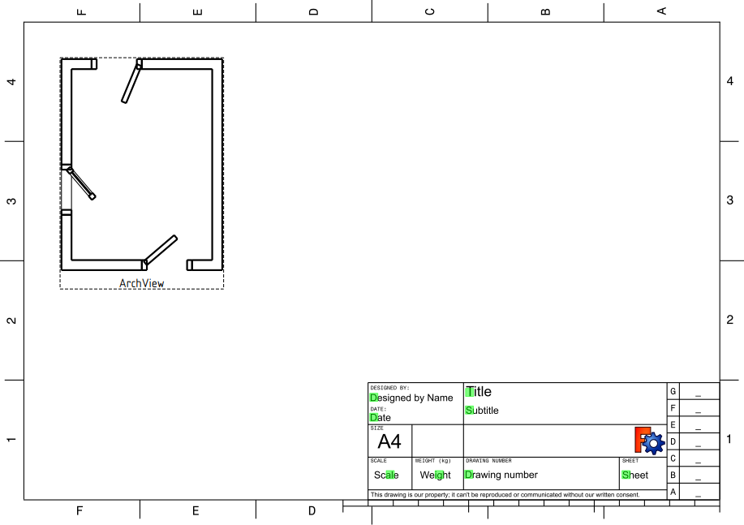
Section plane cutting through solid objects, including walls, doors, and windows
24. Switch back to the Arch Workbench. In the tree view select all components again, and use the Arch SectionPlane tool to create a second Section001 element.
- 24.1. Select
Section001and change the property DadosPosition to[1.5 m, 2.0 m, 1.8 m]. This second plane does cut through all Arch objects. - 24.2. Switch back to the TechDraw Workbench. Select
Section001, use the TechDraw ArchView tool to createArchView001, and set DadosScale to0.02. The new view in the TechDraw page now shows all openings in the Arch Wall produced by doors and windows.
Note: set DadosAll On to true for TechDraw ArchView objects so that all elements cut by the plane are visible in the page, regardless of their visibility state in the 3D viewport. The option DadosShow Fill can also be set to true to draw a shade on the solids that were cut by the section plane.
{kind=link}
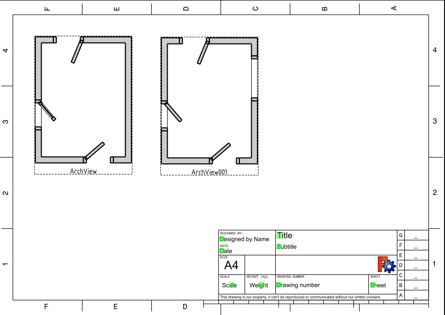
Section view of the building, with a second plane cut, A4 sheet, scale 1:50
Making an elevation projection of the building
25. Go back to the Arch Workbench. In the tree view, select all components, the Arch Wall, the two Arch Windows, and the two Arch Doors, then use the Arch SectionPlane tool to create a third Section002 element.
- 25.1. Rotate
Section002, so that it cuts vertically through the building. Change the properties DadosAxis to[1, 0, 0], and DadosAngle to90. - 25.2. Change the DadosPosition to
[1.5 m, -1 m, 1.5 m], so that the plane is in front of the building.
{kind=link}
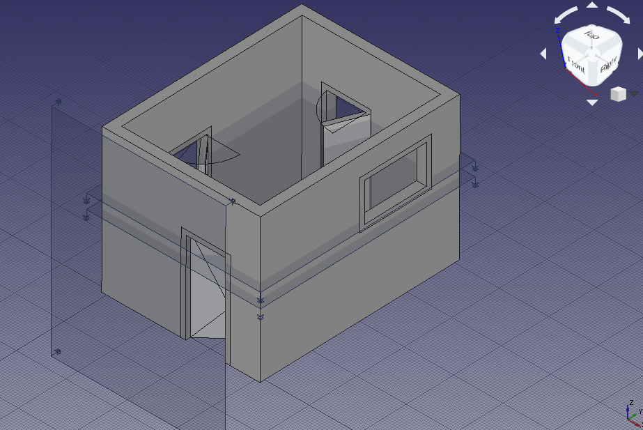
Section planes that cut or look at the building and the solid objects
26. Go back to the TechDraw Workbench, and use the TechDraw ArchView tool on Section002; remember to adjust the scale to 0.02 (1:50). Change DadosRotation to -90 to correct the appearance of the projections. Arrange ArchView002 next to the other views in the page. This third projection looks at the building from the front.
{kind=link}
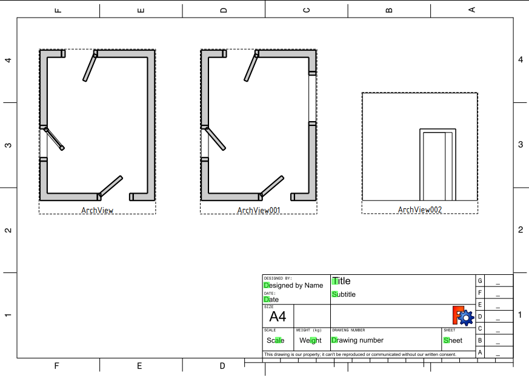
Section view of the building, two top views, and one elevation view, A4 sheet, scale 1:50
Arch and TechDraw interaction
As of the time of writing of this document (FreeCAD 0.18, November 2018), the TechDraw Workbench can only display in its pages what the Arch Workbench exports as SVG. This means that the appearance of the elements included within the Arch SectionPlane tool, and displayed by the TechDraw ArchView tool, is controlled by the Arch Workbench.
The TechDraw Workbench only has minimal control over how it displays those Arch SectionPlane (ArchView) objects. Therefore, bug reports and feature requests related to displaying Arch elements should be filed with both workbenches.
A closer interaction between the workbenches is planed for future versions of FreeCAD. In those versions it is expected that long-standing issues be resolved, such as controlling the characteristics of lines and faces (line width, line color, face color, hatch patterns, and others).
- 2D Drafting: Sketch, Line, Polyline, Rectangle, Arc, Arc From 3 Points, Circle, Ellipse, Polygon, B-Spline, Bézier Curve, Cubic Bézier Curve, Point, Fillet
- 3D/BIM: Site, Building, Level, Space, Wall, Curtain Wall, Column, Beam, Slab, Door, Window, Covering, Pipe, Connector, Stairs, Roof, Panel, Frame, Fence, Truss, Equipment
- Reinforcement Tools: Custom Rebar, Straight Rebar, U-Shape Rebar, L-Shape Rebar, Stirrup, Bent-Shape Rebar, Helical Rebar, Column Reinforcement, Beam Reinforcement, Slab Reinforcement, Footing Reinforcement
- Generic 3D Tools: Profile, Box, Shape Builder, Facebinder, Objects Library, Component, External Reference
- Annotation: Aligned Dimension, Horizontal Dimension, Vertical Dimension, Text, Leader, Label, Hatch, Axis, Axis System, Grid, Section Plane, 2D Drawing, Section View, Section Cut, New Page, New View
- Snapping: Snap Lock, Snap Endpoint, Snap Midpoint, Snap Center, Snap Angle, Snap Intersection, Snap Perpendicular, Snap Extension, Snap Parallel, Snap Special, Snap Near, Snap Ortho, Snap Grid, Snap Working Plane, Snap Dimensions, Toggle Grid, Working Plane Front, Working Plane Top, Working Plane Side, Working Plane
- Modify: Move, Rotate, Scale, Mirror, Clone, Make Link, Copy, Simple Copy, Compound, 2D Offset, Offset, Trimex, Join, Split, Stretch, Draft to Sketch, Upgrade, Downgrade, Add Component, Remove Component, Array, Path Array, Polar Array, Point Array, Cut With Plane, Extrude, Union, Difference, Intersection
- Manage: BIM Setup, Setup Project, Manage Doors and Windows, Manage IFC Elements, Manage IFC Quantities, Manage IFC Properties, Manage Classification, Manage Layers, Material, BIM Report, Schedule, Preflight Checks, Annotation Styles
- Utils: Move to Trash, Working Plane View, Select Group, Set Slope, Working Plane Proxy, Add to Construction Group, Split Mesh, Mesh to Shape, Select Non-Manifold Meshes, Remove Shape From BIM, Close Holes, Merge Walls, Check, Toggle IFC B-Rep Flag, Toggle Subcomponents, Survey, IFC Diff, IFC Explorer, New IFC Spreadsheet, Image Plane, Unclone, Rewire, Glue, Re-Extrude
- Panel Tools: Panel, Panel Cut, Panel Sheet, Nest
- Structure Tools: Structure, Structural System, Multiple Structures
- IFC Tools: IFC Project, IFC Diff, IFC Expand, Convert to IFC Project, IfcOpenShell Update
- Nudge: Nudge Switch, Nudge Up, Nudge Down, Nudge Left, Nudge Right, Nudge Rotate Left, Nudge Rotate Right, Nudge Extend, Nudge Shrink
- Additional: Preferences, Fine tuning, Import Export Preferences, IFC, DAE, OBJ, JSON, 3DS, SHP
- Drafting: Line, Polyline, Fillet, Arc, Arc From 3 Points, Circle, Ellipse, Rectangle, Polygon, B-Spline, Cubic Bézier Curve, Bézier Curve, Point, Facebinder, ShapeString, Hatch
- Annotation: Text, Dimension, Label, Annotation Styles, Annotation Scale
- Modification: Move, Rotate, Scale, Mirror, Offset, Trimex, Stretch, Clone, Array, Polar Array, Circular Array, Path Array, Path Link Array, Point Array, Point Link Array, Edit, Highlight Subelements, Join, Split, Upgrade, Downgrade, Convert Wire/B-Spline, Draft to Sketch, Set Slope, Flip Dimension, Shape 2D View
- Draft Tray: Working Plane, Set Style, Toggle Construction Mode, AutoGroup
- Snapping: Snap Lock, Snap Endpoint, Snap Midpoint, Snap Center, Snap Angle, Snap Intersection, Snap Perpendicular, Snap Extension, Snap Parallel, Snap Special, Snap Near, Snap Ortho, Snap Grid, Snap Working Plane, Snap Dimensions, Toggle Grid
- Miscellaneous: Apply Current Style, New Layer, Manage Layers, New Named Group, SelectGroup, Add to Layer, Add to Group, Add to Construction Group, Toggle Wireframe, Working Plane Proxy, Heal, Show Snap Toolbar
- Additional: Constraining, Pattern, Preferences, Import Export Preferences, DXF/DWG, SVG, OCA, DAT
- Context menu:
- Most objects: Edit
- Layer container: Add New Layer, Reassign Properties of All Layers, Merge Layer Duplicates
- Layer: Activate Layer, Reassign Properties of Layer, Select Layer Contents
- Text and label: Open Links
- Wire: Flatten
- Working plane proxy: Save Camera Position, Save Visibility of Objects
- Page: New Page, New Page From Template, Update Template Fields, Redraw Page, Print All Pages, Export Page as SVG, Export Page as DXF
- TechDraw Views: New View, Broken View, Section View, Complex Section View, Detail View, Projection Group, Clip Group, Insert SVG, Bitmap Image, Share View, Project Shape
- Views From Other Workbenches: Active View, Draft View, BIM View, Spreadsheet View
- Dimensions: Dimension, Length Dimension, Horizontal Length Dimension, Vertical Length Dimension, Radius Dimension, Diameter Dimension, Angle Dimension, Angle Dimension From 3 Points, Area Annotation, Horizontal Extent Dimension, Vertical Extent Dimension, Repair Dimension References
- Hatching: Image Hatch, Geometric Hatch
- Symbols: Weld Symbol, Surface Finish Symbol, Hole/Shaft Fit
- Stacking: Stack Top, Stack Bottom, Stack Up, Stack Down
- Attributes/Modifications: Select Line Attributes, Cascade Spacing and Delta Distance, Change Line Attributes, Extend Line, Shorten Line, Toggle View Lock, Position Section View, Align Horizontal Chain Dimensions, Align Vertical Chain Dimensions, Align Oblique Chain Dimensions, Cascade Horizontal Dimensions, Cascade Vertical Dimensions, Cascade Oblique Dimensions, Area Annotation, Arc Length Annotation, Customize Format Label
- Centerlines/Threading: Circle Centerlines, Bolt Circle Centerlines, Cosmetic Thread Hole Side View, Cosmetic Thread Hole Bottom View, Cosmetic Thread Bolt Side View, Cosmetic Thread Bolt Bottom View, Cosmetic Intersection Vertices, Offset Vertex, Cosmetic 1 Point Circle, Cosmetic 2 Point Circle, Cosmetic 3 Point Circle, Cosmetic Arc, Cosmetic Parallel Line, Cosmetic Perpendicular Line
- Format/Organize Dimensions Horizontal Chain Dimension, Vertical Chain Dimension, Oblique Chain Dimension, Horizontal Coordinate Dimension, Vertical Coordinate Dimension, Oblique Coordinate Dimension, Horizontal Chamfer Dimension, Vertical Chamfer Dimension, Arc Length Dimension, Insert '⌀' Prefix, Insert '□' Prefix, Insert 'n×' Prefix, Remove Prefix, Increase Decimal Places, Decrease Decimal Places
- Annotations: Text Annotation, Rich Text Annotation, Balloon Annotation, Axonometric Length Dimension
- Add Lines: Leader Line, Centerline on Face, Centerline Between 2 Lines, Centerline Between 2 Points, Cosmetic Line Through 2 points, Edit Line Appearance, Toggle Edge Visibility
- Add Vertices: Cosmetic Vertex, Midpoint Vertices, Quadrant Vertices
- Miscellaneous: Remove Cosmetic Object
- Additional: Line Groups, Templates, Hatching, Geometric dimensioning and tolerancing, Preferences
- Getting started
- Installation: Download, Windows, Linux, Mac, Additional components, Docker, AppImage, Ubuntu Snap
- Basics: About FreeCAD, Interface, Mouse navigation, Selection methods, Object name, Preferences, Workbenches, Document structure, Properties, Help FreeCAD, Donate
- Help: Tutorials, Video tutorials
- Workbenches: Std Base, Assembly, BIM, CAM, Draft, FEM, Inspection, Material, Mesh, OpenSCAD, Part, PartDesign, Points, Reverse Engineering, Robot, Sketcher, Spreadsheet, Surface, TechDraw, Test Framework
- Hubs: User hub, Power users hub, Developer hub